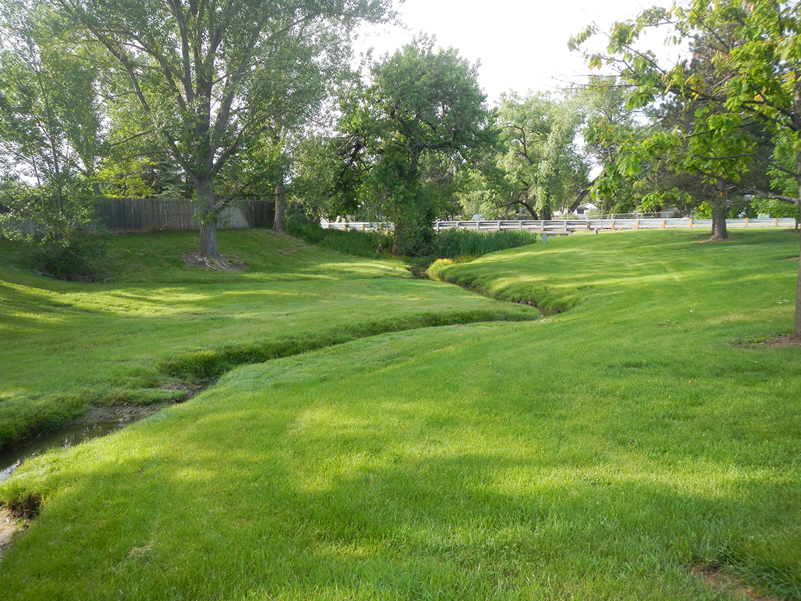
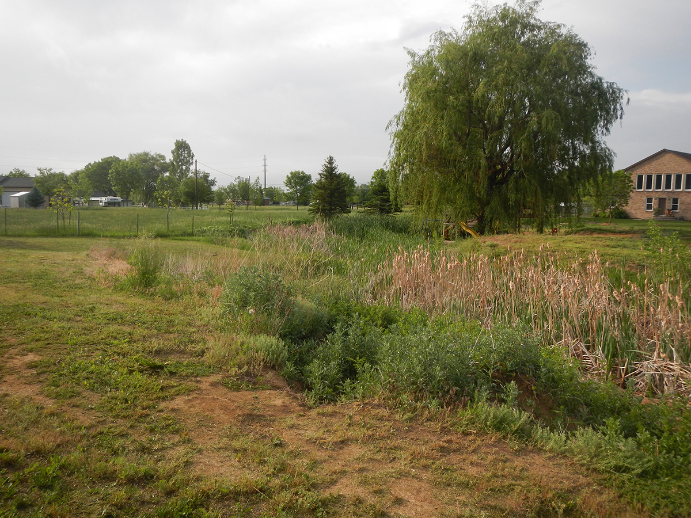
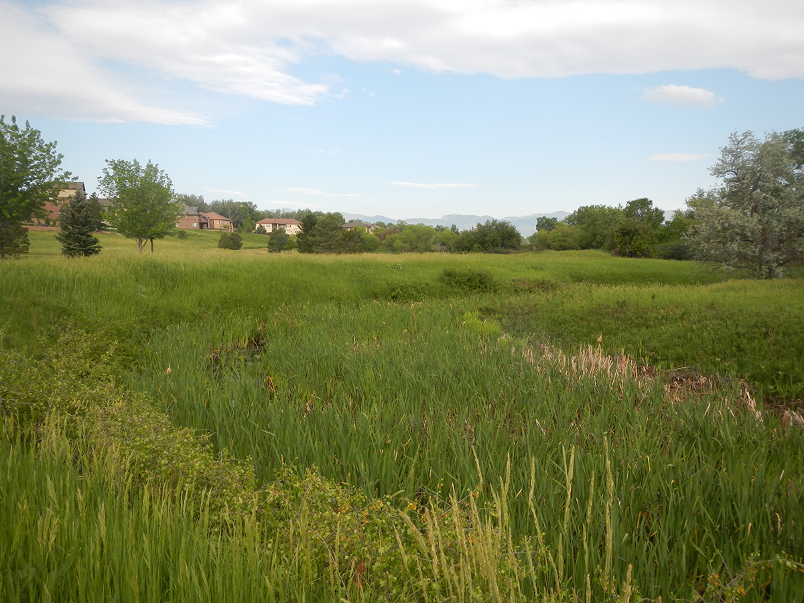
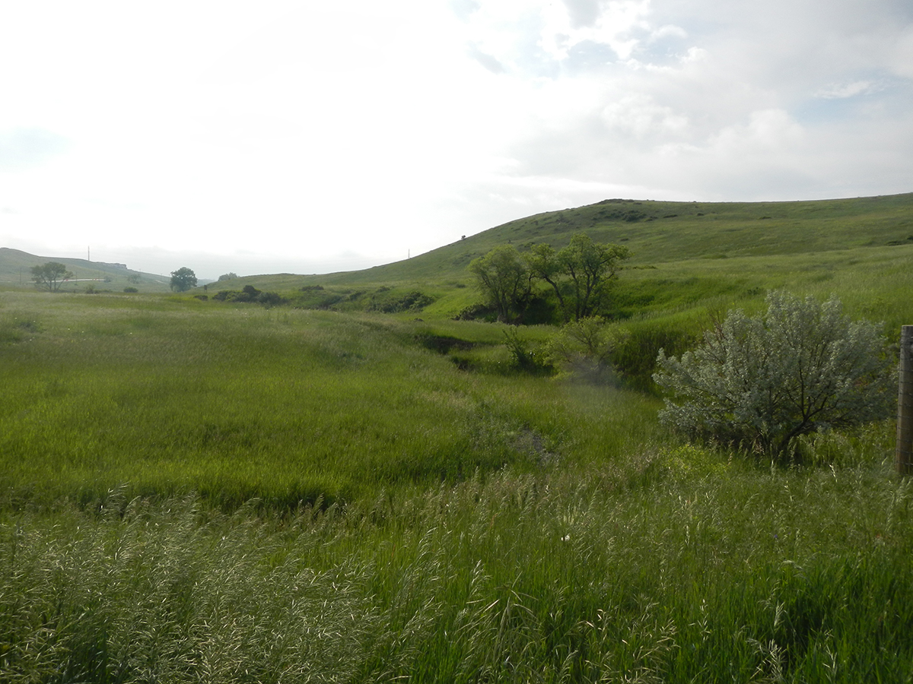

Study Area Description
2.1 Project Area
The Leyden Creek watershed has a drainage area of approximately 11.8 square miles, located in the City of Arvada and unincorporated Jefferson County. The watershed is bounded to the north by the Little Dry Creek (ADCO) and Big Dry Creek (ADCO) watersheds and to the south by Ralston Creek. Leyden Creek, approximately 10.5 miles in length, ranges in elevation from 5420 feet at the confluence with Ralston Creek south of 72nd Avenue and Simms Street to 7648 feet at the upstream watershed limits. The watershed has an average slope of approximately 2.9%. The UDFCD Reuse number for the Leyden Creek watershed is 4308. The extents of the project area can be seen in Figure 2-1.
Downstream of Leyden Lake, the watershed primarily consists of residential development. Although the majority of the basin upstream of Leyden Lake is undeveloped, new development is ongoing and includes both residential and industrial areas. Undeveloped open space is also prevalent within the Arvada city limits and within Jefferson County.
Current development includes two large planned residential developments, both located upstream of Leyden Lake. The Leyden Rock development is located north of W 82nd Avenue at Quaker Street extending west to the Jefferson County landfill. Leyden Ranch West is located directly to the east of Leyden Rock. Based on input from project sponsors these two developments were assumed to be fully built out since they were under construction at the time of this study. Planned development Leyden Ranch East is also forthcoming; however since it is not currently under construction it was not considered built for the existing condition analysis.
The majority of the watershed is comprised of Type C soil as defined by the Natural Resources Conservation Service (NRCS). Type A, Type B, Type D soil are also present within the watershed. A soil map of the watershed can be found in APPENDIX B – Hydrologic Analysis.
Although there are several detention facilities in the watershed, only four met criteria to be considered for flood reduction purposes in this study. Leyden Lake, providing the most storage of these facilities, is located near the center of the watershed. Upstream of Leyden Lake, a regional pond exists and will be formalized in the location of an existing sump downstream of the Leyden Ranch West development. The other two ponds included in the study are at Ralston Valley High School and at Lamplighter Park.
There are three major canals that flow through the project area, including the Church Ditch, Farmers’ High Line Canal, and Croke Canal. All three of these canals convey irrigation water from Clear Creek north to their distribution locations. Leyden Creek crosses the Church Ditch upstream of Leyden Lake and downstream of Quaker Street. The Farmers’ High Line Canal is located directly downstream of Leyden Lake. The Croke Canal is located downstream of Indiana Street and also upstream of the Cameo Estates neighborhood. Canals were considered to be flowing full at the time of the storm for the hydrologic analysis.
Figure 2-1 : Vicinity Map
Project Bounds UDFCD Bounds2.2 Land Use
Land use was determined by zoning data provided by project sponsors in GIS format and the City of Arvada’s Comprehensive Land Use Plan. As directed by project sponsors, the Land Use Plan was prioritized over the zoning information in conflicting areas.
To determine existing conditions, aerial imagery was used to compare to zoning data. When zoning data did not correlate with existing structures, the zoning shapefiles were divided to better represent existing conditions. This was more prevalent in Jefferson County where existing development overlapped with agricultural zones. Table RO-3 of the Urban Storm Drainage Criteria Manual (USDCM) was used to select impervious values for each land use type. For residential development, Figures RO-3, RO-4, RO-5 (USDCM) were utilized to determine impervious percentages.
Table 2-1 : Land Use Description
| Land Use Description | Percent Impervious (%) | Land Use Description | Percent Impervious (%) |
|---|---|---|---|
| Undeveloped Area | 2 | Residential - 3 DU/Ac | 47 |
| Railroad Tracks | 5 | Schools | 50 |
| Landfill | 15 | Multi-unit - Detached | 60 |
| Residential - 0.5 DU/Ac | 20 | Multi-unit - Attached | 75 |
| Residential - 1 DU/Ac | 25 | Industrial- Light | 80 |
| Residential - 1.5 DU/Ac | 30 | Industrial - Heavy | 90 |
| Residential - 2 DU/Ac | 35 | Business - Commercial Area | 95 |
| Residential - 3 DU/Ac | 40 | Lake Water Surface | 100 |
The Jefferson County landfill located east of Hwy 93 and north of W. 82nd Avenue was assigned an impervious value of 15 %. This value was selected after project sponsor agreement based on soil conditions consistent with landfill cover and operations. This value also maintains consistency with hydrology submitted for ongoing FEMA update studies. The Pioneer Sand Company, located south of W. 82nd Avenue, was assumed to have an open space impervious value. The existing conditions land use map can be found in APPENDIX B - Hydrologic Analysis.
For the future land use conditions, impervious values anticipate future development based on land use and zoning information collected from project sponsors. Consideration was given to current land-use, where it exceeded future projections based on zoning. In general, the future conditions percent impervious values exceed those developed for previous studies. Downstream of Leyden Lake the watershed is primarily developed, resulting in similar land use for both existing and future conditions. Upstream of the reservoir higher impervious values resulted from the planned development areas and industrial locations.
Through discussions with project sponsors, the area west of Highway 93, and south of Highway 72, zoned commercial and industrial in Arvada, was replaced with open space based on the land use plan. The future conditions land use map can be found in APPENDIX B - Hydrologic Analysis.
2.3 Reach Description
For the purposes of this study Leyden Creek was divided into four reaches. Descriptions of each reach are provided below and can be seen on maps provided in APPENDIX B – Hydrologic Analysis.
Figure 2-2 : Watershed Map
Project Bounds Arvada Limits UDFCD Gages Storage Facilities Blue Mountain Rd.Jefferson County Landfill Leyden Rock Leyden Ranch West
Downstream of Leyden Lake a detailed floodplain analysis was conducted in the 2004 Boyle Flood Hazard Area Delineation study. Upstream of Leyden Lake an approximate detail (Zone A) floodplain exists for Leyden Creek and a small portion of Barbara Gulch near the confluence with Leyden Creek.
Reach 1- Confluence with Ralston Creek to Leyden Creek Park

Leyden Creek at W 72nd Ave.
Throughout Reach 1, Leyden Creek is bordered by residential land uses. This reach of Leyden Creek is approximately 0.7 miles long and primarily consists of a grass lined channel. Leyden Creek crosses Simms St. and W 72nd Ave in this reach, passing through the Mapleleaf and Woodland Valley subdivisions.
Reach 2- Leyden Creek Park to Upstream of Alkire Street

Leyden Creek at W 75th Pl.
Reach 2 stretches approximately 1 mile through residential development of large acre lots. The stream meanders through this reach crossing Alkire St. at the upstream end of the reach also crossing W 75th Pl. throughout the reach. The majority of this reach is contained in the Cameo Estates Unit 2 subdivision.
Reach 3 – Upstream of Alkire St to Leyden Lake

Leyden Creek upstream of Alkire St.
Reach 3, approximately 1.1 miles, contains the Indiana St. and Croke Canal crossings. Downstream of the crossings, the neighborhood of Cameo Estates lies to the north with Youth Memorial Park to the south.
Reach 4 – Upstream of Leyden Lake

Leyden Creek at W 82nd Ave.
Reach 4 consist primarily of a natural channel on undeveloped land. The creek meanders approximately 3.3 miles during this reach, starting at Highway 93 crossing W 82nd Avenue and Quaker St. prior to entering Leyden Lake, downstream. The Leyden Rock and Leyden Ranch West residential developments are currently under construction north of W. 82nd Avenue. These developments will contribute flows upstream of the Leyden Creek crossing with Quaker St. in the Leyden Townsite subdivision.
2.4 Flood History
There is limited information on any flooding along Leyden Creek prior to the September 2013 flood event. Past hydrology studies noted severe flooding may have been likely, only went unrecorded. The 2009 UDFCD Ralston Creek Flood Warning Plan also did not identify past flooding events on Leyden Creek
There are two UDFCD stream gages located within the Leyden Creek watershed. Stream Gage 203 - Leyden Reservoir Water PT was installed in December 2002 located in Leyden Lake. The maximum discharge of 1,351 cfs from this gage was recorded on September 12, 2013. Stream Gage 213 – Leyden Confluence was installed May 1988 located east of Simms St near the confluence with Ralston Creek. The record high water for this location occurred August 6, 1995 with a peak flow of 3,520 cfs. In their 2014 report on the flooding events of Leyden Creek, Water and Earth Technologies Inc. (WET) suggested Stream Gage 213 is recalibrated due to what they believed to be an overestimation of flows compared to their analysis of high water marks.
WET also reported the following regarding the September 2013 flood:
-
At Blue Mountain Road, a plugged culvert beneath Blue Mountain Road caused flows normally contributing to Coal Creek watershed to enter the Leyden Creek basin. A peak flow of 280 cfs was estimated to pass through the railroad embankment, eroding Blue Mountain Road where the culvert was plugged. The erosion was repaired using 2,000 tons of fill material.
-
Leyden Road (W. 82nd Ave) was overtopped by as much as three feet at the Leyden Creek crossing. During the event the road was closed between Indiana St. to Highway 93.
-
Quaker Street was overtopped with erosion bursting a 12” water main. The water supply was reconfigured and there was not a sustained interruption of drinking water. Peak discharges from high water marks were estimated to be between the 10-yr and 50-yr levels.
-
The Church Ditch embankment breached at the crossing with Leyden Creek, diverting flows to Leyden Lake.
-
The outflow at Leyden Lake was recorded at 1,351 cfs much higher than the previously estimated 100-yr release rate of 373 cfs.
-
Indiana Street was overtopped prior to receiving spillway flows. The roadway was ultimately inundated by up to a foot in depth. Improvements were made from the existing 36- and 18-inch pipes to triple (3) 36-inch CMPs.
-
The Croke Canal intercepted flow from Leyden Creek when Leyden overtopped the upstream canal embankment. Overtopping occurred at Eldridge St. and W. 78th Place near Cameo Estates. An intentional breach was made at the Leyden Creek crossing to prevent breaches elsewhere. Breaching the canal resulted in a second, lower flood peak on Leyden Creek impacting areas previously flooded.
-
Cameo Estates is located between Eldrige St. and Alkire St. Several residences were damaged, along with flooding in pastures, yards, and streets.
-
Alkire St was overtopped from W. 78th Avenue to W. 74th Drive and was closed for safety reasons during the storm. There was significant flood inundation within the Youth Memorial Park/Sports Complex, and likely reduced downstream discharges.
Although the flow was much higher than the expected 100-yr release rates at Leyden Lake, several of the reaches downstream of the lake did not experience flows on that same order of magnitude. The bridge on W. 72nd Ave was not overtopped during the flood as was the bridge at Simms St. These structures were originally sized for a 100-yr event.